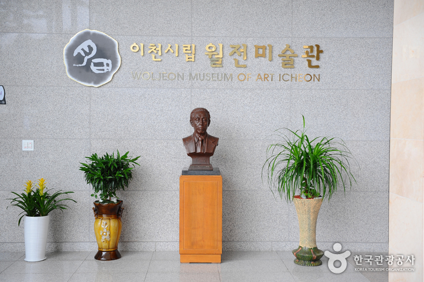

이천시립월전미술관

지역 : 경기 이천
설명 : 설봉산 끝자락에 위치한 시립미술관, 다양한 기획 전시 등 볼거리가 풍부한 곳
웹사이트 링크 1:
http://www.iwoljeon.org/
웹사이트 링크 2:
https://place.map.kakao.com/8050756
웹사이트 링크 3:
https://www.google.com/maps/place/%EC%9D%B4%EC%B2%9C%EC%8B%9C%EB%A6%BD%EC%9B%94%EC%A0%84%EB%AF%B8%EC%88%A0%EA%B4%80/@37.2773946,127.4248721,17z/data=!4m5!3m4!1s0x3564a9d4e802e461:0x99130754a64f99c5!8m2!3d37.279432!4d127.4243687